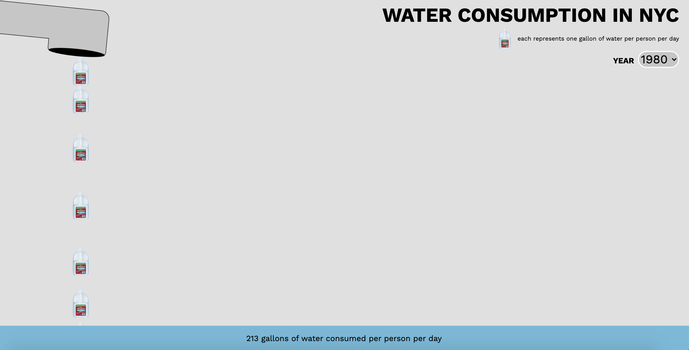

water consumption in nyc (1979-2019)
2020
In early December 2020, I took a Data Visualization as Activismworkshop hosted by Pioneer Works and taught by the artist Sam Lavigne.
In the workshop, we looked at examples of data visualization that interrogated our assumptions about public data. Most of these examples challenged the traditional, minimalist approach to presenting data (clean lines, few colors, all very neat and meant to convey a sense of certainty and authority- devoid of feeling and pure fact...which in itself is a fiction). We were then set loose on Open Data NYC, public data that's open source and available for anaylizing, visualizing, whatever sort of tricks you have up your sleeve.
I then created a rather simple (if somewhat silly) visualization of the average water consumption in NYC from 1979 to 2019. After selecting the year, a stream of gallon water jugs pours from the spout, with each gallon jug representing a gallon per person consumed per day. The water level rises as each gallon falls to the ground.
 A screenshot of the visualization for the year 1980.